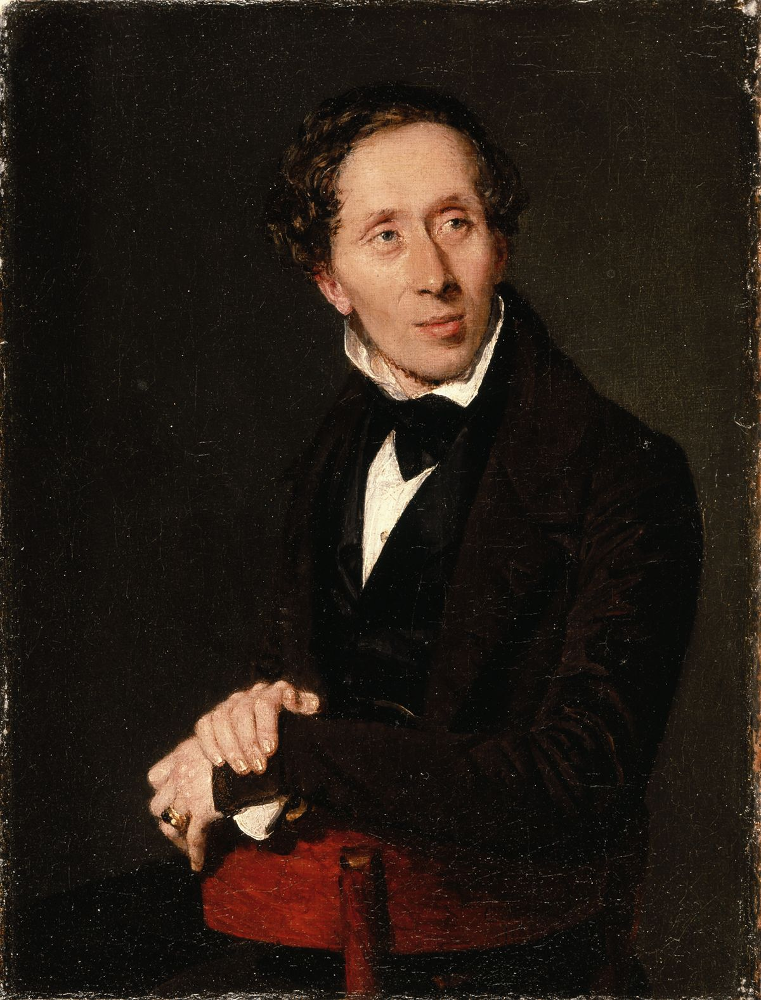

Hans Christian Andersen (2 tháng 4 năm 1805 – 4 tháng 8 năm 1875; tiếng Việt thường viết là Han-xơ Crít-xtian An-đéc-xen) là nhà văn người Đan Mạch chuyên viết truyện cổ tích cho thiếu nhi. Trong tiếng Đan Mạch, tên ông thường được viết là H.CAndersen.
Cha của Andersen luôn tin rằng ông có thể có mối quan hệ với dòng dõi quý tộc và theo như một nhà thông thái ở Hans Christian Andersen Center, bà nội của ông từng nói rằng gia đình của họ từng là thuộc giai cấp trên trong xã hội Tuy nhiên, những cuộc nghiên cứu chứng tỏ rằng những câu chuyện trên là vô căn cứ. Gia đình ông có những mối liên hệ với quý tộc Đan Mạch, nhưng đó chỉ là quan hệ về công việc. Tuy nhiên, có thuyết cho rằng Andersen là một đứa con bất hợp pháp của người trong hoàng tộc còn lại ở Đan Mạch, một sự thật ủng hộ cho thuyết này là vua Đan Mạch đã ưu ái Andersen khi ông còn trẻ tuổi và đã trả các khoản tiền học phí cho ông. Nhà văn Rolf Dorset khẳng định rằng điều đó cũng không chứng minh được đó là khoản thừa kế của Andersen.
Andersen đã biểu lộ trí thông minh và óc tưởng tượng tuyệt vời của mình khi còn là một cậu bé, tính cách đó được nuôi dưỡng bởi sự nuông chiều của cha mẹ và sự mê tín của mẹ ông. Ông thường tự làm cho mình các món đồ chơi, may áo cho các con rối và đọc tất cả các vở kịch, hầu hết là những vở kịch của William Shakespeare và của Ludvig Holberg. Trong suốt thời thơ ấu, ông có một tình yêu nồng nhiệt đối với văn học. Ông được biết đến vì thuộc làu các vở kịch của Shakespeare và tự trình diễn các vở kịch bằng những con rối gỗ. Ông cũng có hứng thú với nghệ thuật nói đùa, và hỗ trợ trong việc đề xướng ra hội những người thích đùa giữa những người bạn của ông.
Năm 1816, cha ông qua đời và cậu bé phải tự đi kiếm sống. Ông làm thợ học dệt vải và cả thợ may, sau đó thì vào làm trong nhà máy thuốc lá. Năm 14 tuổi, Andersen chuyển tới Copenhagen (tiếng Đan Mạch: København) tìm việc làm diễn viên trong các nhà hát. Ông có chất giọng cao và đã được kết nạp vào Nhà hát Hoàng gia Đan Mạch. Sự nghiệp này kết thúc nhanh chóng khi ông vỡ giọng. Một người bạn đã khuyên ông làm thơ. Từ đó, Andersen chuyển hẳn sang viết văn.
May mắn, ông đã vô tình gặp được vua Frederik VI của Đan Mạch. Nhà vua rất thích cậu bé kỳ lạ này và đã gửi ông vào một trường học La tinh ở Slagelse.. Trước khi được nhận vào trường học, Andersen đã thành công trong việc xuất bản câu chuyện đầu tiên của ông – The Ghost at Palnatoke's Grave (Bóng ma ở ngôi mộ Palnatoke) vào năm 1822. Mặc dù là một học sinh chậm tiến (có lẽ là không học được) và không thích thú với việc học, Andersen học ở cả Slagelse và ở một trường ở Helsingør cho tới năm 1827. Andersen sau này đã tả những năm tại Slagelse và Helsingør là những năm đen tối nhất trong cuộc đời vì bị hành hạ khi sống trọ tại nhà người thầy và vì ở cùng các bạn cùng lớp lớn tuổi hơn.
Andersen nghĩ ra truyện này lần đầu vào năm 1842 khi ông thưởng thức vẻ đẹp của thiên nhiên trong kỳ nghỉ ở nông trang Bregentved. Ban đầu ông định đặt tên truyện là "Con thiên nga trẻ", nhưng sau đó đã nghĩ tới yếu tố ngạc nhiên do sự biến đổi từ xấu trở thành đẹp nên đặt tên lại là "Chú vịt con xấu xí" (Den grimme ælling). Nhiều người cho rằng ông đã ví mình với chú vịt con xấu xí, ban đầu bị hất hủi nhưng sau này trở thành một con thiên nga xinh đẹp. Sau này ông thú nhận rằng truyện này là "một sự phản ánh cuộc đời tôi", và, khi nhà bình luận Georg Brandes hỏi Andersen rằng liệu ông có viết tự truyện của mình không thì ông trả lời rằng đã viết rồi, đó là "Chú vịt con xấu xí".
Truyện "Chú vịt con xấu xí" được xuất bản lần đầu ở Copenhagen vào ngày 11.11.1843 trong tập truyện "Nye Eventyr. Første Bind. Første Samling. 1844". Ấn bản đầu tiên gồm 850 quyển đến ngày 18.12.1843 đã được bán hết và nhà xuất bản Reitzel dự định xuất bản tiếp 850 quyển nữa.
Truyện này là truyện thứ 4 và cuối cùng trong tập truyện gồm "Englen" (Thiên thần), "Nattergalen" (Chim họa mi), và "Kjærestefolkene" (Những kẻ yêu nhau).[6] Tập truyện này phần lớn được bán hết ngay và ngày 18.12.1843 Andersen đã viết: "Quyển sách được bán chạy như tôm tươi. Mọi tờ báo đều ca ngợi nó, mọi người đều đọc nó ! Không tác phẩm nào của tôi được đánh giá cao như những truyện này!"[1] Truyện này được in lại trong tập Eventyr. 1850 ngày 18.12.1849 và in lại lần nữa trong tập Eventyr og Historier. Første Bind. 1862 ngày 15.12.1862.
Truyện "Chú vịt con xấu xí" đã được dịch ra nhiều ngôn ngữ khác và được xuất bản trên khắp thế giới, trở thành truyện nổi tiếng nhất của Andersen.